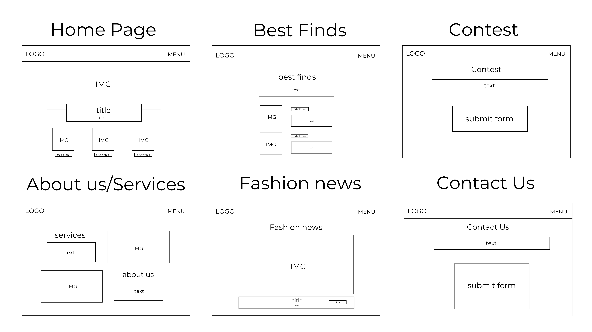
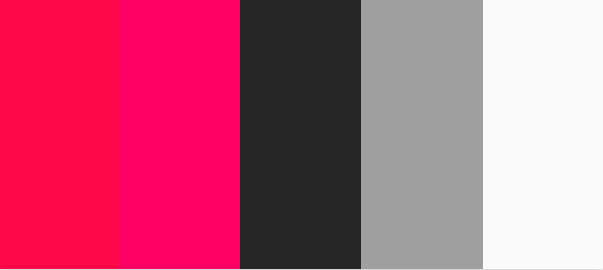
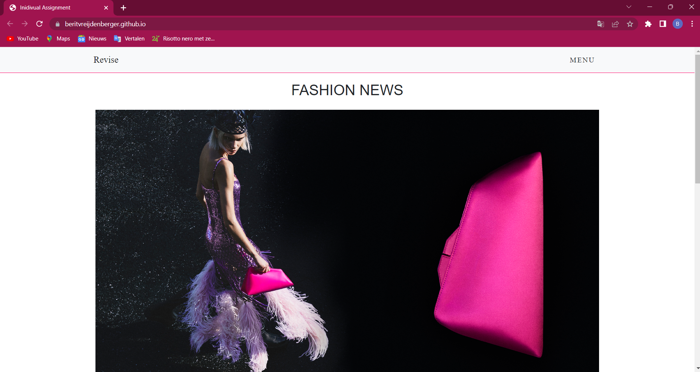
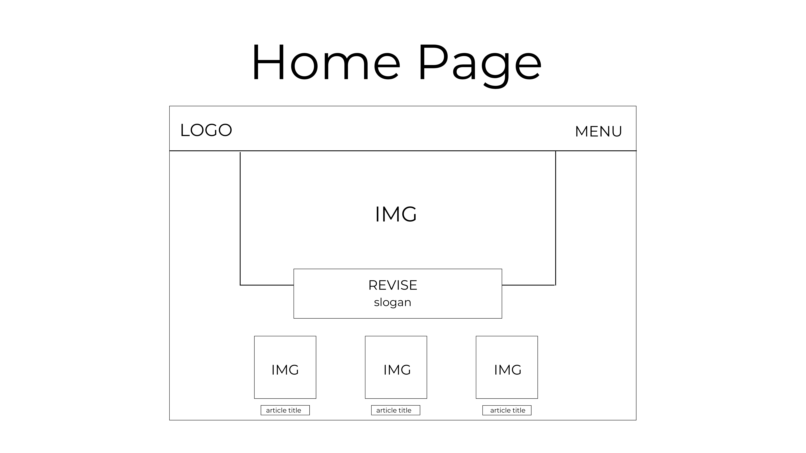

I aimed to give the whole page an air of sophistication, modernity, and elegance. I was inspired by the elle.nl website. The fashion and lifestyle magazine Elle is well-known online. The page should feel feminine and powerful. Two phrases that complement each other perfectly, in my opinion. While keeping these words in mind, I made the decision to use pink, black, and white as the primary colors for my website. Pink to keep it feminine, black to keep it powerful. I chose the fonts because I thought they complemented the feminine and fashionable vibe. I chose the Vogue typeface for the headers and headlines because it is instantly identifiable, makes a strong statement, and recalls thoughts of the fashion magazine 'Vogue'.
The fonds used
These are the colors used in the website
Scenario:
1. Find a black dress and purchase it via the link
2. Find out how to contact us
Self-test
1.
- Scroll through the website down and up.
- Click on the menu and read through the options.
- Click on best finds.
- Pick the dress I like the most.
- Click on the ‘check it ’ button.
- Purchase a black dress through the linked website.
2.
- Scroll through the website down and up.
- Click on the menu and read through the options.
- Click on ‘contact’.
- Fill in all the boxes and press submit
User testing Angela de Joode 10-10-2022
Notes:
- Scrolls a little bit, sounds confused
- Menu does not move along with the page when scrolling down
- Goes to best finds and sees dresses
- Not clear what kind of site it is, not a clear home page
- Individual assignment, top of the page
- Annoying font use, Revise in small letters now but should be bigger
- Not clear that the site is called Revise it looks like it’s called fashion news because those letters are bigger
- Now goes to best finds page
- She asks: what if I am not looking for a black dress and why am I looking at this
- Do: ‘click here’ instead of ‘check it’, that’s clearer
- Now she goes to the best trends page
- Annoying that there are 5 images, I would use 6, that looks better
- Links on the page to other websites are not responsive
- It says best trends but it is one trend
- Contact us page is clear
- One page for fashion news, one page for best finds
- Colors and overall look of the site is fine
- Would not visit this website again, not clear what to do and what I see, boring and a little dull
Summary
The website's message was unclear and did not pique Angela's attention, which is the main reason she would not visit it again. To solve this issue, I think I need to change some aspects of the website. The home page, she said, was the most bothersome. She had no idea what she needed to accomplish or what the website was about when she first opened it. I must therefore change the home page.
The first version of the homepage looked like this:
As you can see, the font for the logo is much smaller than the font for fashion news This causes confusion since, in most cases, the logo is the first thing you notice when you visit a website. Because there is nothing on the homepage that piqued her attention or made it apparent what this website is about, the enormous images additionally confused her. She also noticed that the websites name was missing from the top of the page, above the URL. That needs to be altered. The new wireframe of the homepage looks like this:
